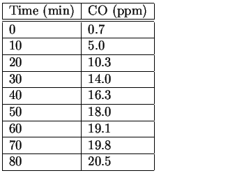
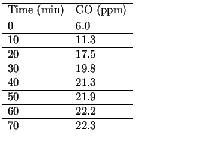

Next: About this document ...
Problem set #2
The following problems require you to compute least squares fits and
linear interpolants. Many software packages will perform basic
operations for you. Maple and Matlab are examples, but even simple
plotting packages often have ``linear regression'' subroutines that
will find the best fit for you.
- 1.
- Download dataset A from the course web site. Find an
interpolating polynomial through this dataset, and record the
coefficients.
Find the
best fit of this data for linear, quadratic, cubic, fourth and fifth
order polynomials and record the root mean squared errors. Assuming
the data came from a systematic source, f(x), with random noise added,
speculate the form of the underlying system. Justify your answer.
- 2.
- Download dataset B from the course web site. This is a
second set of measurements from the same source. Find an
interpolating polynomial through these points and compare with the
interpolating polynomial from dataset A. Are the interpolants
consistent in any way?
- 3.
- Download dataset C from the course web site. This is a
third set of measurements from the same source. Find the
best fit of this data for linear, quadratic, cubic, fourth and fifth
order polynomials and record the root mean squared errors. Based
solely on the information from this third dataset, speculate on the
form of the underlying system. Compare
these results with those from dataset A. Justify
your answer.
- 4.
- Assuming that both datasets came from the same source, what is
your best guess of the underlying system, f(x)? Justify your answer.
- 5.
- The following is a true story. My neighbor, Mrs. X [not her
real name, of course], approached me for some help in a lawsuit
which she had brought against her former employers. She had
suffered serious health problems and attributed them to a faulty
furnace at her former place of employment. The furnace had cracked and was
leaking carbon monoxide (CO) into the building. Continual exposure to
carbon monoxide can cause a wide variety of health problems. An
environmental consulting firm hired by the defendants measured the
extent of the leak in the following way. They turned off the furnace
and allowed the building to vent for many hours.
Table:
Tables of first
(left) and second (right) carbon monoxide measurements.

 |
Then, they turned on
the furnace and measured the carbon monoxide levels at a duct to a
common area at regular time intervals (see Table 1).
After this test, they turned off the furnace, waited a few hours, and
ran a second test (see Table 1 again). I ask you the same
questions that my neighbor asked me at the time.
- The second set of data appears to be very different from the
first which would imply that there is some nonsystematic behavior in
the furnace. Do the two data sets reflect the same physical phenomena
or not?
- The CO levels are increasing in all measurements. The
environmental firm
claims that they stopped measuring CO levels because they would not
have increased substantially more. (How would they know if they
stopped measuring???) Was the environmental firm correct when the
stopped taking measurements? If not, how high would the CO levels
eventually go?
In addition, I ask you the following question: Assuming the employer
repaired the furnace after the tests so that no further measurements
were possible, what additional information would you want or need to have to
confidently answer the questions above?
Next: About this document ...
Louis F Rossi
2001-09-12